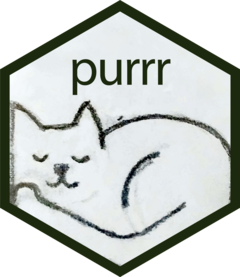

| purrr-package {purrr} | R Documentation |
purrr: Functional Programming Tools
Description

A complete and consistent functional programming toolkit for R.
Author(s)
Maintainer: Hadley Wickham hadley@posit.co (ORCID)
Authors:
Lionel Henry lionel@posit.co
Other contributors:
Posit Software, PBC (ROR) [copyright holder, funder]
See Also
Useful links:
Report bugs at https://github.com/tidyverse/purrr/issues
[Package purrr version 1.2.1 Index]